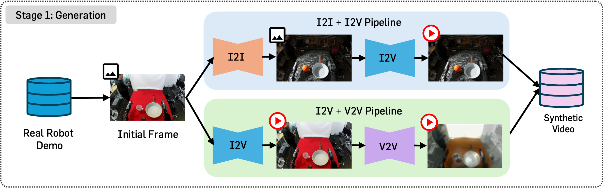
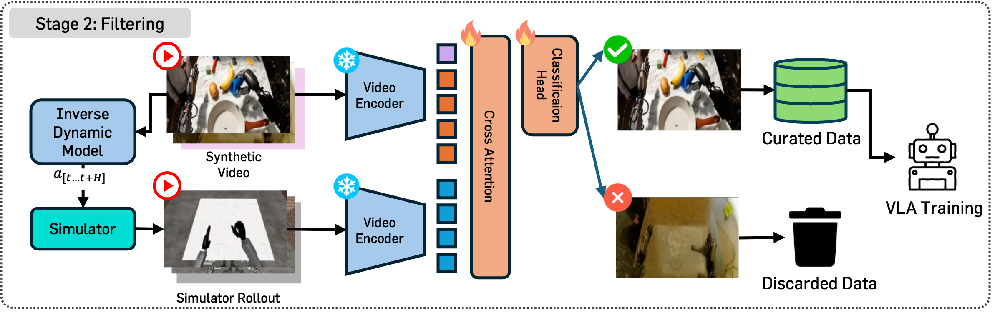
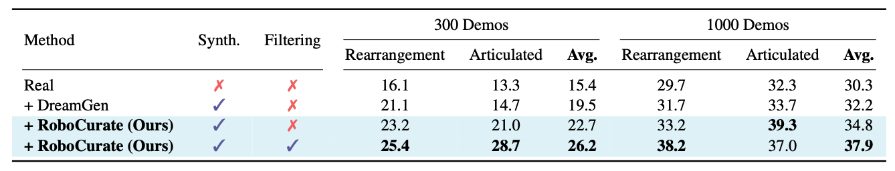
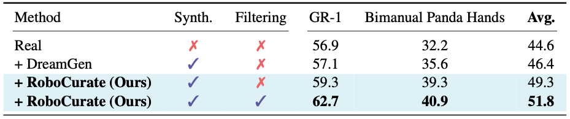

We present RoboCurate, a novel neural trajectory generation framework that increases diversity via controllable video generation and filters low-quality samples by evaluating motion similarity between generated video and simulator replay. Specifically, RoboCurate replays the predicted actions in a simulator and assesses action quality by measuring the consistency of motion between the simulator rollout and the generated video. In addition, we unlock observation diversity beyond the available dataset via image-to-image editing and apply action-preserving video-to-video transfer to further augment appearance.
1. Generation Stage
We expand observation diversity with two components: (1) image-to-image (I2I) editing on the initial frame for scene-level variation, and (2) video-to-video (V2V) transfer for appearance diversity while preserving initial motion.
2. Filtering Stage
We filter suboptimal synthetic trajectories with inaccurate actions by replaying the predicted actions in a simulator and assessing action quality by measuring the consistency of motion between the simulator rollout and the generated video. We train an attentive probe on top of a frozen video encoder to measure motion similarity between the simulator rollout and the generated video with automatically generated positive and negative samples from real data.
Accurate action: Simulator rollout ≈ Synthetic video
Inaccurate action: Simulator rollout ≠ Synthetic video
Examples of positive and negative pairs for attentive probe training.
In-distribution task — Pick and Place Can
Out-of-distribution task (Novel Object) — Pick and Place Cup
Out-of-distribution task (Novel Behavior) — Pour Can
We report the average success rate (%) over 50 trials across 24 tasks (18 rearrangement and 6 articulated).
We report the average success rate (%) over 50 trials across 6 tasks (3 GR-1 Humanoid and 3 Bimanual Panda Arms with Dexterous Hands), trained with 100 demonstrations per task.
